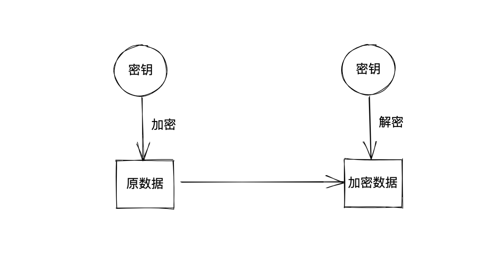
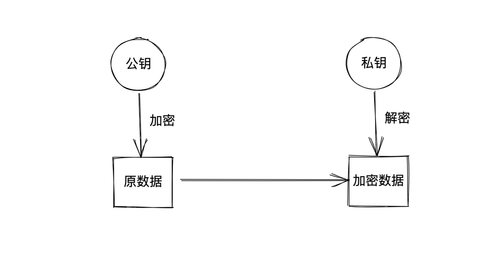
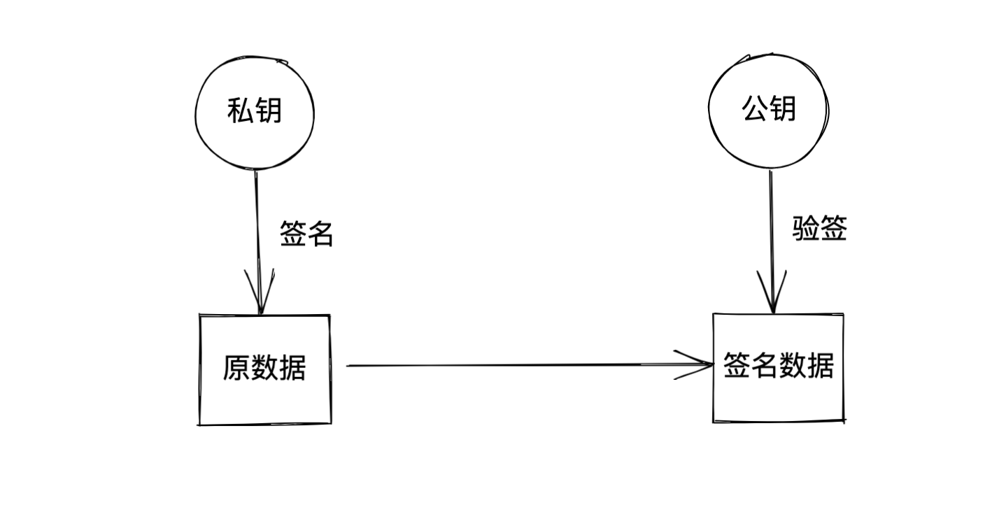
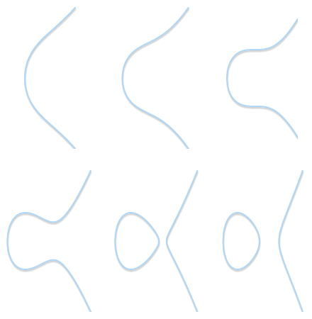
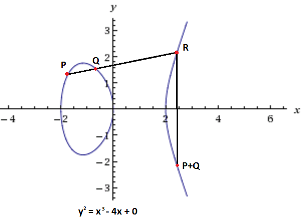
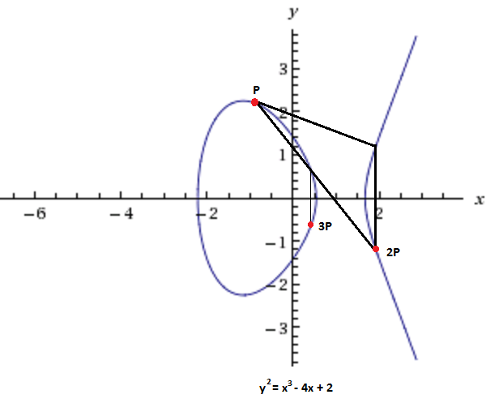

一文看懂椭圆曲线签名算法
如果接触过区块链，大概率听说过椭圆曲线签名算法。这个算法是区块链链技术的基石。但这个算法很抽象，很难理解，这篇文章会通过简单易懂的方式来介绍一下这个算法，尽量不涉及大量的公式，其中很多的数学证明会直接忽略，我们直接使用证明的结果。
1. 对称加密与非对称加密
在加密算法中，对称加密和非对称加密是两类主要的加密算法。使用对称加密算法时，需要双方都知道相同的密钥，加密和解密需要使用相同的密钥，相对来说，对称加密的效率比较高，比如我们熟知的 AES 加密算法。

但是对称加密有个问题，密钥传输是个大问题，如果在网络上传输密钥被人截获的话，那么加密的数据就很不安全了。
解决这个问题，就需要使用非对称加密算法。非对称加密的密钥分为公钥和私钥，公钥是可以放出去的，任何人都可以拿到你的公钥，让后用公钥加密，经过公钥加密的数据只有你手上的私钥可以解密。这样每个人只要放出自己的公钥，别人就能给你安全的传输数据。

但是非对称加密还有个问题，相比于对称加密，效率会低很多，如果把非对称加密用于网络流量很大的环境下，会对性能有很大的影响，所以在实际的使用中，通常是这两种算法结合使用，比如 HTTPS 中通过非对称加密来建立连接，传输对称加密的密钥，而后续的数据传输则使用对称加密算法。
而且非对称加密算法还有一种妙用，用来签名。如果对一个数据使用私钥去签名，别人可以用公钥快速的来检查这个签名是不是合法，这是区块链技术的基础之一。

这里需要注意一下：使用公钥叫加密数据，使用私钥叫签名。
RSA 和 ECC（Elliptic Curve Cryptography） 是两类比较出名的非对称加密算法，RSA 利用的是质数分解的原理来实现安全性。但是 RSA 对密钥长度的要求越来越高，这样也会造成计算量很大，而 ECC 使用的密钥长度则要短的多，而且安全性也更强。
本文所说的 ECDSA（Elliptic Curve Digital Signature Algorithm）算法是基于 ECC 的的一种签名算法，广泛用于区块链、HTTPS 等需要非对称加密的场景。
2. 椭圆曲线算法
2.1 椭圆曲线的表示
椭圆曲线其实是一个数学方程，通常用下面的方程式来表示:
$$
y^2 = (x^3 + a \times x + b)\quad mod\quad p
$$
如果 a 和 b 取的值不同，那么对应的曲线形状也会不一样：

上面的这些曲线的对应的是 $b = 1$，$a$ 的取值范围是2 ~ -3 分别对应的曲线。
在上面的方程式中，$x$ 的取值只能是整数，不能是浮点数。还要加上以 $p$ 为底的取模运算，那么 $y^2$ 的取值就在 0 ~ $p$-1 之间，由于 $x$ 只能是整数，那么说明能够取到的点也是有限的，记作 $N$。
关于椭圆曲线，我们了解这些就够了。
2.2 椭圆曲线的运算
在正式说到椭圆曲线签名算法之前，我们还需要需要了解一下在椭圆曲线上的两种运算，点加法（Point Addition）和点乘法（Point Multiplication）。

假设现在有这样一条椭圆曲线。画一条直线，与曲线相交于 3 个点，分别是 $P, Q,R$，根据点加法运算的定义，可以得到 $P + Q+R = 0$，那么 $P + Q = -R$， $-R$ 的定义是关于 $x$ 轴对称所得到的一个点，如上图所示，这就是点加法的定义。
如果我们移动这条直线，让 $P,Q$ 两点重合：

根据上面的点加法规则，可以得到 $2P$ 点，以此类推，不断去连接 $$ $P$ 点和 $nP$ 点，就可以得到 $3P,4P…$ $(n+1)P$ 点。点乘就定义为 $k \times P$，表示 $P$ 点的 $k$ 次相加。
2.3 单向陷门函数
上面说完了椭圆曲线的定义和运算，最后来说一下椭圆曲线的安全性，对于非对称加密来说，关键点就是无法从加密的数据中和公钥中去推算私钥，这里怎么实现的呢？
在上面我们得到了点乘的定义，任意一点$R$ 可以通过这个点乘公式 $R = k\times P$ 计算得到。这里的关键在于即使知道了 $P$ 和 $R$ 点，我们也无法计算得到 $k$，在椭圆曲线算法中没有减法或者除法这种逆向操作。 这是椭圆曲线算法安全性的基础，这个特性也称之为单向陷门函数。
这个整数 $k$ 通常就是算法中的私钥，而 R 对应的就是公钥。
3. 椭圆曲线签名算法
上面已经介绍完椭圆曲线的特性，下面来看一下椭圆曲线签名算法是如何利用椭圆曲线的特性来完成签名的生成和验签。
在使用签名算法之前，需要确定一条椭圆曲线，根据上面知道，如果参数选的不同，那么椭圆曲线方程就会不一样。其中 $G$ 是一个选定的初始点，后面所有的运算都会基于这个点开始。
然后需要定义一对公私钥，根据上面的定义 $P = k \times G$，其中，$k$ 是一个随机整数，对应为私钥 $k0$，$P$ 表示椭圆曲线上的一个点，对应为公钥 $P0$。
3.1 生成签名
在生产公钥和私钥之后，就可以用以下步骤来生成签名：
- 生成一个随机数 $k1$，注意这个随机数不是上面生成的私钥
- 利用 $P = k1 \times G$ 计算点 $P1$，注意这个不是上面的公钥
- $P1$ 点的 x 坐标就是 $R$
- 对需要签名的数据计算 hash，为 $H$
- 计算 $S = k1^{-1}(H + k0 \times R)\quad mod \quad p$，这个 $p$ 是模运算的底，也需要提前指定好
通常签名的长度是 40 字节，前面 20 字节是 R，后面 20 字节是 S，R 和 S 拼接在一起就是最后的 DCSDA 签名。
3.2 验证签名
验证签名的过程更简单，只需要通过下面的公式：
$$
P = S^{-1} \times H \times G + S^{-1} \times R \times P0
$$
$P0$ 是公钥，通过这个公式，很容易就是可以计算得到 $P$， 得到 $P$ 之后，如果 $P$ 的 $x$ 坐标等于 $R$，那么就验签成功，在验签的过程中，完全不需要私钥的参与。
在上面的算法中，可以发现，除了签名者手上的私钥 $k0$ 之外，在签名的过程中还会生成一个随机数 $k1$，这个随机数很关键，如果这个数字不够随机，或者使用固定的数字，那么就额可以通过两次签名的使用的哈希值 $H$ 和 $H’$ 以及 $S$ 和 $S’$ 来计算这个 $k1$。
如果 $k1$ 知道了，就可以利用上面生成 $S$ 的公式来计算出私钥 $k0$，这样一来，私钥就泄漏了。在 2010 年，索尼的 PS3 上就是因为随机数 $k1$ 总是返回一个固定的数字，导致产生了这个安全漏洞。
4. 小结
椭圆曲线签名算法相比于 RSA 算法要更加安全，使用的密钥位数也更短。已经在很多领域里面被使用，HTTPS、区块链。这个算法的安全性来源于单向**陷门函数，**无法通过计算反向推出私钥，这也是这个算法最巧妙的地方。
文 / Rayjun
[1] https://en.wikipedia.org/wiki/Elliptic-curve_cryptography
[2] https://www.instructables.com/Understanding-how-ECDSA-protects-your-data/
[3] https://andrea.corbellini.name/2015/05/17/elliptic-curve-cryptography-a-gentle-introduction/